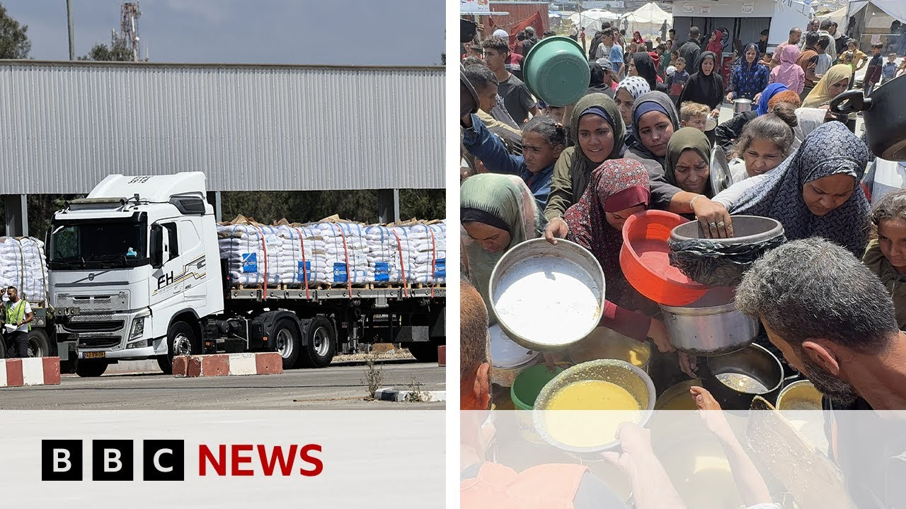

【加沙开始分发援助物资 | BBC新闻】
Summary: Israel's Prime Minister accuses allies of siding against humanity amid Gaza criticism, as limited aid enters under international pressure.
摘要： 以色列总理指责盟友在加沙问题上站在人性的对立面，同时在国际压力下，有限援助物资进入加沙。

⏱️ Estimated Reading Time: 12 min
Israel's Prime Minister Benjamin Netanyahu has accused some of his country's closest allies of, as he put it, being on the wrong side of humanity after the UK, French, and Canadian leaders criticized Israel for its ongoing military escalation in Gaza and the lack of humanitarian aid being allowed into the territory.
以色列总理本雅明·内塔尼亚胡指责该国一些最亲密的盟友，用他的话说，站在了人性的错误一边，此前英国、法国和加拿大领导人批评以色列在加沙持续军事升级，并阻止人道主义援助进入该地区。
A small number of trucks carrying flour and other supplies have been allowed entry in recent days after international pressure on Israel.
在国际社会对以色列施压后，近日少量运送面粉和其他物资的卡车获准进入。
The video footage shows bags of bread being thrown to a desperate crowd outside a bakery in Nuzarat refugee camp.
视频画面显示，面包被扔向努扎拉特难民营一家面包店外绝望的人群。
The population's been starving after an 11-week aid blockade by the Israelis.
在以色列实施11周的援助封锁后，当地民众一直处于饥饿状态。
But fuel still isn't being allowed in.
但燃料仍未被允许进入。
The United Nations says water wells in parts of the Gaza Strip are shutting down because Israel hasn't allowed any in for 80 days with a full shutdown of water and sanitation facilities possible by the end of the week.
联合国表示，加沙地带部分水井正在关闭，因为以色列80天来未允许任何燃料进入，到本周末可能全面关闭供水和卫生设施。
We're also getting reports of 16 Palestinians being killed in Israeli air strikes this morning, according to Gaza's health ministry.
据加沙卫生部称，我们还收到报告，今早以色列空袭造成16名巴勒斯坦人死亡。
Here's some of what the Israeli prime minister said in an address on Thursday night.
以下是以色列总理周四晚讲话的部分内容。
I say to President Macron, Prime Minister Carney, and Prime Minister Starmer.
我对马克龙总统、卡尼总理和斯塔默总理说。
When mass murderers, rapists, baby killers, and kidnappers Thank you.
当大规模杀人犯、强奸犯、杀害婴儿者和绑架者感谢你们时。
You're on the wrong side of justice.
你们站在了正义的错误一边。
You're on the wrong side of humanity and you're on the wrong side of history.
你们站在了人性和历史的错误一边。
We've been speaking to our correspondents Yoland Nell in Jerusalem and Rushi Abual in Cairo.
我们一直在与耶路撒冷的约兰德·内尔和开罗的鲁希·阿布阿尔两位记者交谈。
I asked Yoland first about this statement released by the Israeli prime minister.
我首先向约兰德询问了以色列总理发表的这一声明。
Well, this video he lays out some really quite extraordinary accusations against some of Israel's closest allies and he suggests that Sir and the French president, the Canadian prime minister want Hamas to stay in power in Gaza.
在这段视频中，他对以色列一些最亲密的盟友提出了非常不寻常的指控，并暗示斯塔默、法国总统和加拿大总理希望哈马斯继续在加沙掌权。
He said with their joint statement criticizing Israel's expanding military offensive in the Gaza Strip earlier this week, they were emboldening Hamas to continue fighting forever.
他说，他们本周早些时候联合声明批评以色列在加沙地带扩大军事进攻，这助长了哈马斯继续永远战斗的气焰。
He said that uh these leaders were guilty also of hypocrisy um saying they bought into what he called Hamas's propaganda uh that says that Israel is starving Palestinian children.
他说这些领导人还犯有虚伪之罪，称他们相信他所谓的哈马斯宣传，即以色列正在让巴勒斯坦儿童挨饿。
This of course after we have had warnings from uh global hunger monitor saying that famine is looming in the Gaza Strip that um tens of thousands of children could be facing acute malnutrition.
此前全球饥饿监测机构警告称，加沙地带即将发生饥荒，数万名儿童可能面临严重营养不良。
Um now he also said um expanding his accusations, Mr. Netanyahu, you see many international institutions are complicit in spreading lies.
他还扩大指控范围称，内塔尼亚胡先生，你看许多国际机构都在散布谎言。
He said the press repeats it the mob believed it and a young couple is gunned down in Washington.
他说媒体重复这些谎言，暴民相信了，华盛顿一对年轻夫妇被枪杀。
And this comes against a backdrop though of Benjamin Netanyahu facing increasing pressure at home.
而这一切的背景是本雅明·内塔尼亚胡在国内面临越来越大的压力。
That's right.
没错。
He is sort of backed into a corner somewhat.
他有点被逼入绝境。
there has been mounting criticism domestically and also um coming at him uh from abroad.
国内外的批评声浪越来越高。
Although he did say that when he had spoken to President Trump in the aftermath of that uh shooting in Washington with two Israeli staff members killed um that he had been supportive of Israel's goals uh in Gaza um looking to the US of course as Israel's closest ally.
尽管他表示，在华盛顿枪击事件导致两名以色列工作人员死亡后，他与特朗普总统交谈时，特朗普支持以色列在加沙的目标，当然美国是以色列最亲密的盟友。
But we are also uh expecting um a a major conference, aren't we, about the idea of a two-state solution still being pursued.
但我们也在期待一场关于仍被追求的两国方案的重要会议。
That's right.
是的。
And the idea of a two-state solution, it's the idea of creating an independent Palestinian state uh alongside Israel.
两国方案的理念是在以色列旁边建立一个独立的巴勒斯坦国。
That has for a long time been the international formula for peace here.
长期以来这一直是国际社会在此地的和平方案。
And we have heard um in recent days and weeks as international leaders have really um lost patience um with Israel and its conduct of the war in Gaza that they have been talking more and more France in particular saying that it will recognize an independent state of Palestine.
最近几天和几周，随着国际领导人真的对以色列及其在加沙的战争行为失去耐心，他们越来越多地谈论，特别是法国表示将承认巴勒斯坦独立国家。
It will be the first of the G7 countries to do so if it goes ahead.
如果成行，它将是七国集团中第一个这样做的国家。
Now that is something that the Israeli prime minister is vehemently against and he has said that any leaders who take that step will be giving a reward for terrorism.
这是以色列总理强烈反对的，他表示任何采取这一步骤的领导人都是在奖励恐怖主义。
And recently as well we've seen with Donald Trump's visit to the Gulf states that he was keen uh for for those Arab states to normalize relations with Israel.
最近我们还看到唐纳德·特朗普访问海湾国家，他热衷于让这些阿拉伯国家与以色列关系正常化。
That's right.
没错。
I mean, this has been a longtime goal um of President Trump and and the US uh particularly since um in President Trump's first administration, he um persuaded some key Arab countries that hadn't previously had diplomatic relations with Israel, to recognize the Israeli state, um to normalize their ties.
这是特朗普总统和美国长期以来的目标，特别是在特朗普第一个任期内，他说服了一些此前与以色列没有外交关系的关键阿拉伯国家承认以色列国，实现关系正常化。
Uh that's something that was really celebrated by Israel prior to uh the war in Gaza, those deadly 7th of October attacks uh led by Hamas on Israel.
这是以色列在加沙战争、哈马斯10月7日对以色列致命袭击之前真正庆祝的事情。
Um that really was something that looked like it was potentially on the cards a normalization deal between Saudi Arabia and Israel.
这看起来像是沙特阿拉伯和以色列之间可能达成的正常化协议。
But uh then what we've seen since then Saudi Arabia totally changing its position and demanding as have many other countries that there should be uh a pathway to creating uh an independent Palestinian state and dealing with um the conflict here the decades old conflict between Israel and the Palestinians with that solution.
但此后我们看到沙特阿拉伯完全改变了立场，与许多其他国家一样要求应该有一条建立独立巴勒斯坦国的途径，并用这一解决方案处理以色列和巴勒斯坦之间长达数十年的冲突。
Thank you very much.
非常感谢。
Let's speak to Rashi Abul our Gaza correspondent who joins us from Cairo.
让我们与从开罗加入我们的加沙记者拉希·阿布尔交谈。
Uh let's just first of all talk about the strikes overnight and the further fatalities we're hearing about.
首先谈谈昨晚的空袭和我们听到的更多死亡消息。
Rashi, tell us more.
拉希，告诉我们更多。
Yeah, I mean the strike overnight according to witnesses, some local journalists and also Hamas government media office targeted Hamas police unit.
是的，据目击者、一些当地记者和哈马斯政府媒体办公室称，昨晚的空袭目标是哈马斯警察部队。
They were in the their way to protect.
他们当时正在执行保护任务。
As the the statement of the Hamas government said, a convoy of aid was traveling from the border into the one of the warehouses for the W FP inside Gaza in a place called Dalah in the middle of Gaza.
哈马斯政府声明称，一支援助车队正从边境前往加沙中部一个叫达拉的地方的世界粮食计划署仓库。
They said the the unit was engaged in in in a exchange of fire with some looter who were trying to attack the the convoy.
他们说该部队与一些试图袭击车队的抢劫者交火。
Then later on, Israeli air strike, five missiles, four missiles, killed six of them.
随后以色列空袭发射了五枚导弹，四枚导弹，造成六人死亡。
The Hamas media office said that this is a crime against the people who are trying to protect aid coming into the people who are starving inside Gaza.
哈马斯媒体办公室称这是对试图保护援助物资进入加沙饥饿民众的人的犯罪。
The incident happened overnight and according to health ministry this morning, six people were were killed and about 20 injured in that incident.
事件发生在昨晚，据今早卫生部称，该事件造成六人死亡，约20人受伤。
And speaking of aid, just how much difference is it making the supplies that have come in already?
说到援助，已经进入的物资有多大作用？
Well, talking to many people across Gaza, we haven't seen any change yet in the uh the I mean the state of famine, the state of you know starvation in Gaza.
与加沙各地许多人交谈后，我们还没有看到饥荒状态、加沙饥饿状态的任何改变。
About 130 truck in total were allowed into Gaza in 3 days and most of the aid is still lying in in some of the bakeries and in some of the warehouses for the UN and other aid organization.
三天内约有130辆卡车获准进入加沙，大部分援助物资仍存放在一些面包店以及联合国和其他援助组织的仓库中。
Yesterday there was an attempt to bake some uh you know bread and distribute it but very chaotic situation.
昨天有人试图烤面包并分发，但场面非常混乱。
The hungry people attacked two of the bakeries in Osirat refugee camp and everything turned into a chaotic scene and the two bakeries were operating yesterday had to shut down this this morning.
饥饿的人群袭击了奥西拉特难民营的两家面包店，一切变得混乱不堪，昨天还在营业的两家面包店今早不得不关闭。
They put out a statement on Facebook saying that without a a protection to our operation, we can't feed the people.
他们在Facebook上发表声明称，没有对我们行动的保护，我们无法养活人们。
So it is very complicated situation in in fact there is about 130 trucks already in Gaza.
所以情况非常复杂，实际上已有约130辆卡车进入加沙。
But expert and Palestinians in Gaza said that this is a drop in the ocean.
但专家和加沙的巴勒斯坦人表示这是杯水车薪。
They need about 400 to 500 trucks every day for months for at least two months in in order to meet the severe shortages of food.
他们每天需要400到500辆卡车，持续至少两个月，才能满足严重的食品短缺。
Not only food but also most important is the fuel.
不仅是食物，最重要的是燃料。
Israel did not allow any fuel for uh 11 weeks and the operations in the remaining hospital in Gaza city and and the south are really facing very difficult to run their essential operation.
以色列11周来未允许任何燃料进入，加沙城和南部剩余医院的运营真的面临很大困难，难以维持基本运作。
Water well the sewage system the trucks that is collecting you know the rubbish and garbage from the streets are not functioning because of the because of the fuel.
水井、污水系统和从街道收集垃圾的卡车因燃料问题无法运转。
So what is being allowed is very little considering the the state of women in Gaza.
考虑到加沙妇女的状况，允许进入的物资非常少。